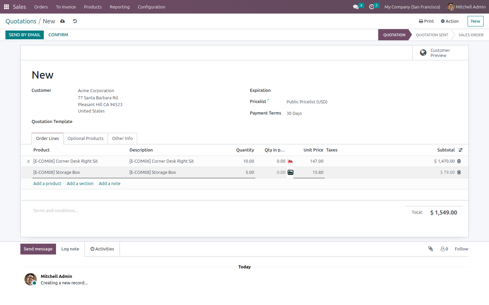
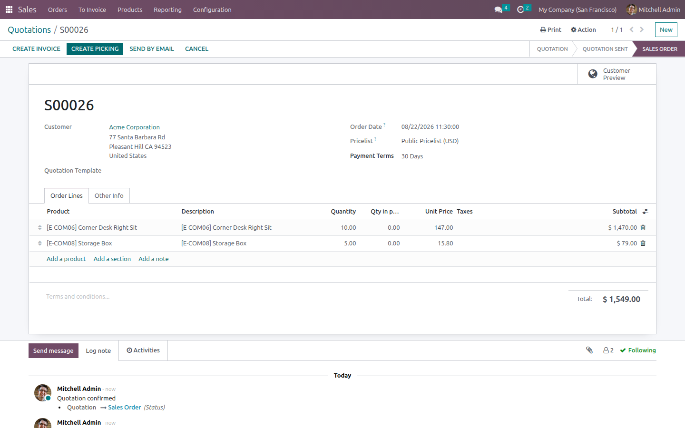
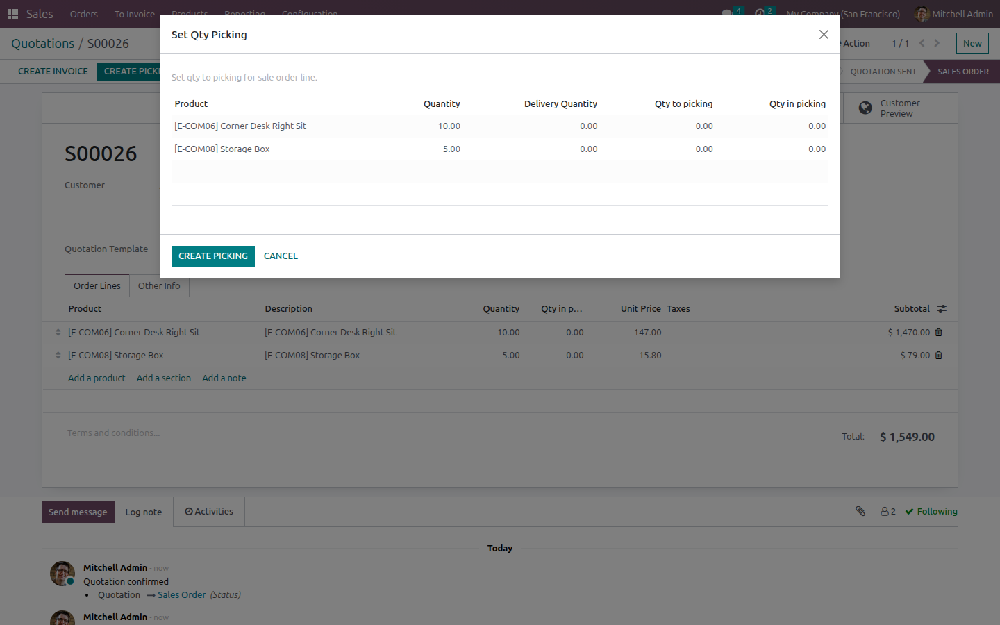
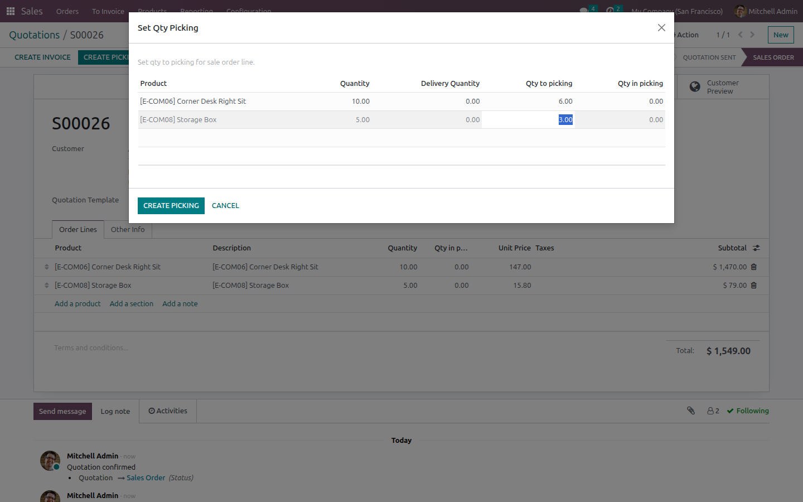
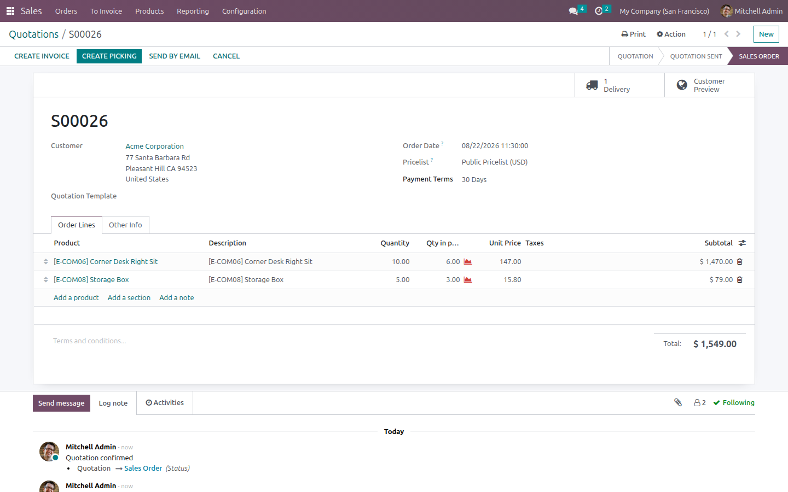
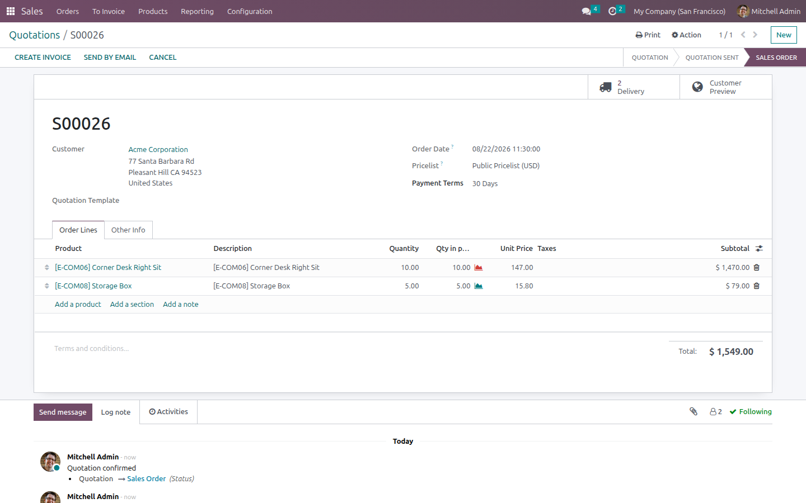
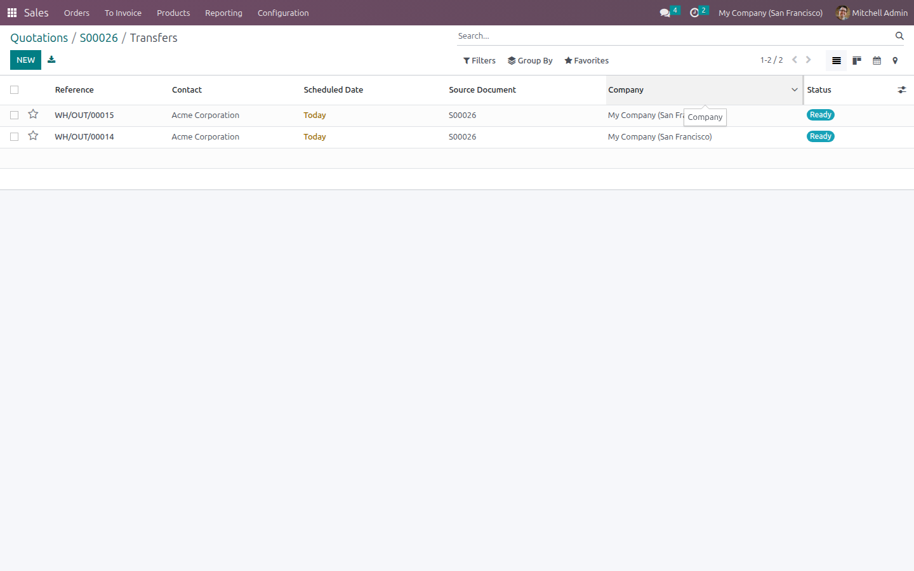

Split Sales Deliveries
Obtain multiple deliveries according to sales requirements.


Screenshots
Multiple deliveries from a single sale order
You will be able to generate multiple deliveries according to the quantity of the product and the customer's requirements, to be able to sell without having to deliver or set aside the entire product in a single delivery order, to be delivered in packages in the future.
1. Confirm the sale order
A quotation with several order lines (here two products, quantities 10 and 5) is confirmed as usual.

2. The "Create Picking" button appears
As soon as the order is confirmed, the module adds a "Create Picking" button next to Confirm — it only shows while any line still has quantity pending to be put into a delivery.

3. Set the quantity to deliver, per line
Clicking "Create Picking" opens a wizard listing every order line with its ordered and already-delivered quantity, plus an editable "Qty to picking" column.


4. Restrict deliveries to what was actually sold
The module blocks any attempt to request more quantity than what remains on the order line, so a delivery can never exceed what the customer bought.
5. First partial delivery is generated
Confirming the wizard creates a stock picking for just that partial quantity. The order now shows "1 Delivery" and the "Qty in picking" column reflects what was just sent to the warehouse.

6. Repeat for the remaining quantity
"Create Picking" is still available because quantity remains pending. Opening the wizard again shows the quantity already in picking, and lets you set the rest.
7. Fully split — the button disappears
Once every line's "Qty in picking" matches the ordered quantity, "Create Picking" is hidden automatically and the order shows "2 Delivery".

8. Two independent transfers, one sale order
Opening the Delivery smart button shows the two separate stock transfers (WH/OUT) that were generated on demand from the same sale order, each with its own quantities.
